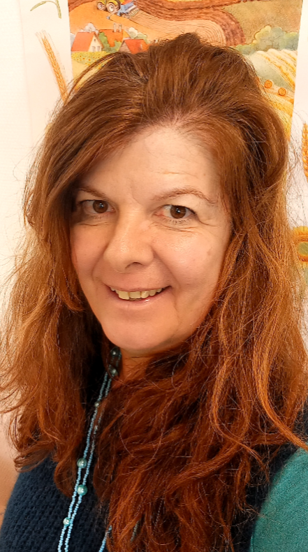
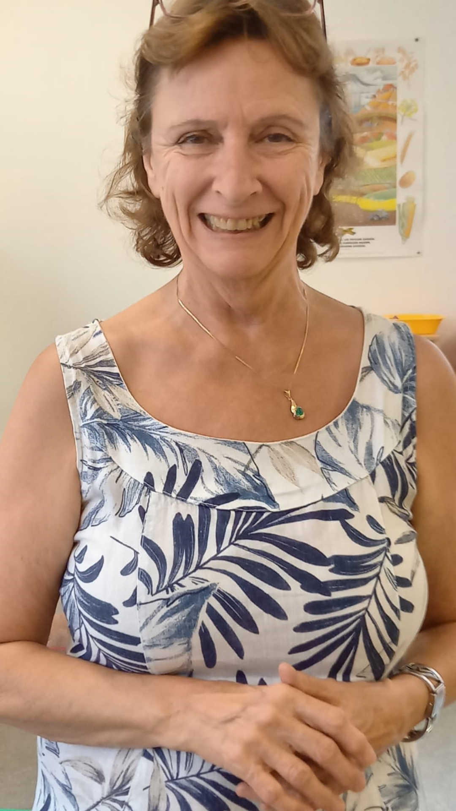
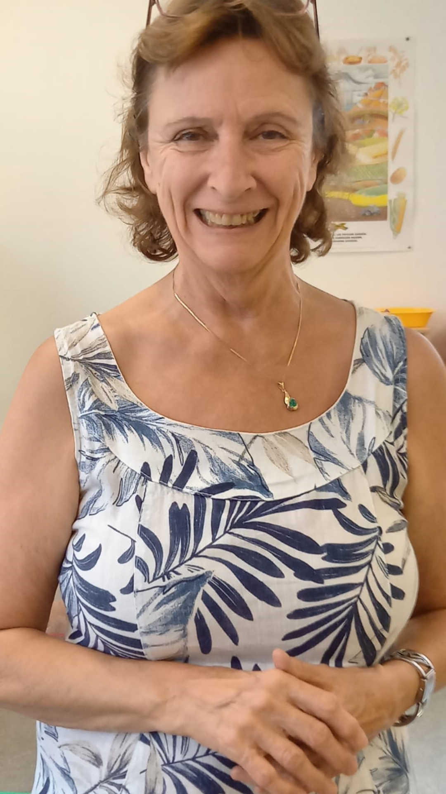
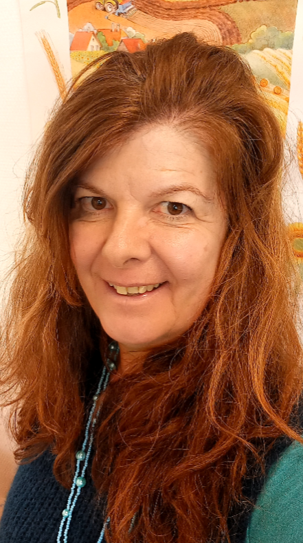
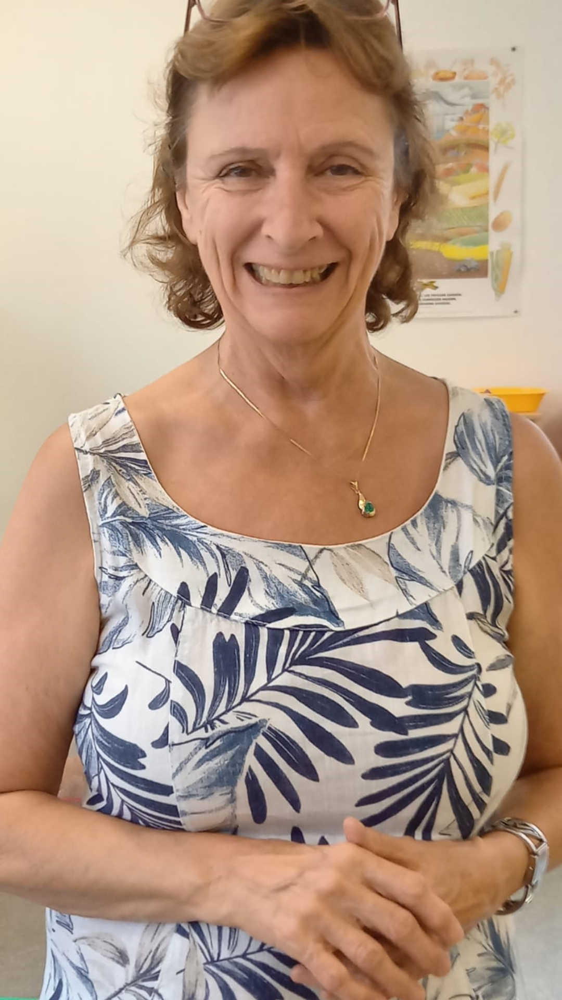

Notre équipe :
 

Le jardin d'enfants Arc-en-Ciel est situé au chemin de l'Etang 1, 1037 Etagnières, en face de l'administration communale.
C'est dans un cadre chaleureux et sécurisant, que les enfants sont accueillis dès l'âge de 2 ans 1/2, jusqu'à 5 ans (2P).
Le jardin d'enfants Arc-en-Ciel est un lieu de découvertes, où les enfants jouent, ont une vie sociale, se familiarisent avec le partage, l'autonomie, la collectivité, les différences entre enfants, la confiance en soi. Chaque matin, un atelier est proposé. Avec différents matériaux, l'enfant à la possibilité de peindre sur des supports, de cuisiner, d'écouter des histoires racontées par une éducatrice, de participer à des jeux de société, d'exercer sa motricité avec de la pâte à sel.. . Tous les lundis matins, Sylviane Buchilly donne un cours d'expression corporelle, méthode Margaret Morris. Quatre à cinq fois par année, des sorties en dehors du jardin d'enfants sont planifiées. Lorsque les températures sont plus clémentes et à partir du mois de mars, une fois par mois, une sortie en forêt est organisée, par tous les temps. Nous profitons des alentours du refuge d'Etagnières et d'être au vert pour observer, écouter, sentir, organiser des jeux. En collaboration avec l'UAPE d'Etagnières, les classes enfantines, un bac avec de la terre est mis à notre disposition. Planter, semer. regarder les fleurs pousser, manger des tomates cerises, préparer des tisanes avec les herbes du jardin, font la joie des enfants.
Chaque enfant avec ses spécificités est le bienvenu. L'inclusion fait partie de la vie sociale.
Notre TWINT :
Notre équipe :

